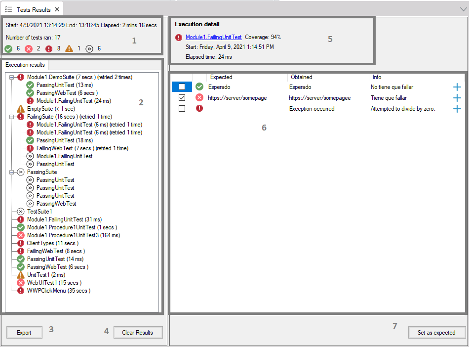
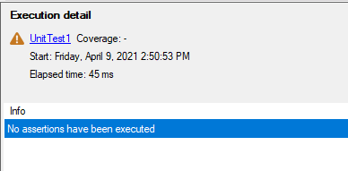
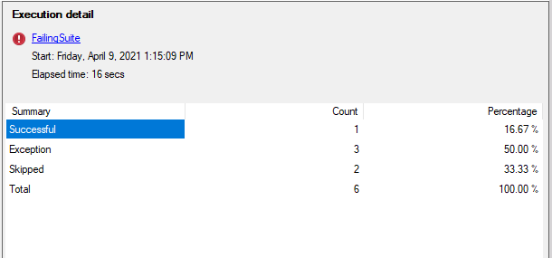

Test execution results are shown in the Test Results window. This window is composed of two main sections: the left one that contains a summary of the entire execution, and the right one that shows details of a selected node in the left section. More detail about every component of this window is presented below. Test Results window structure 1. Execution summaryThis section gives the user an overview of the execution of the tests performed. The start date and time of the execution itself and the elapsed time is displayed on the first line. The number of tests ran, i.e. the number of tests that ran indeed, not taking into account skipped tests is displayed on the second line. This count includes the tests that ran within a suite and those who ran independently. Tests are grouped up by their result on the third line: ok, error, exception, warning, and skipped to provide more information at a glance. All test executions are considered here. 2. Test objects results treeIn this section, a tree of the executed test suites and tests is displayed. For each one the information displayed is:
3. Export results buttonWhen clicked, a File System window is prompt to select a path and file name to export the execution results in HTML format. 4. Clear results buttonIf clicked, all Test Results window sections are cleared, leaving no test results being displayed. This action can not be undone. 5. Execution detailIn this section, detailed information about the selected test object in the Test objects results tree section is shown.
6. Commands + Assertions detailIn this section, a list of the executed testing actions is shown. For unit tests, this means assertions only and an exception if occurred. For Web UI Tests, besides assertions and the exception, all commands are shown. If no step is executed for a test, then this section is shown as follows:  Since the information being displayed is different depending on the selected test object type, they are presented separately here. Unit Test columns
Web UI Test columns
Suite execution detail When a test suite is selected the following information is displayed  The grid presents a summary of tests count grouped by their results and the correspondent percentage of the total for the selected suite. 7. Set as expected buttonIf clicked, all assertion results checked are used to replace obtained values on the current execution as expected values in the appropriate Data Provider. The goal of this feature is to be used when it is known as a fact that the tested object works as expected, so the obtained results are correct and not the expected values. For this reason, only failed assertions are checked by default. In order for this feature to work properly, the assertion message must follow the format: TestCaseId.ExpectedFieldName: ... Supported types to use with this feature are:
Availability: this feature is available since GeneXus 17 upgrade 2. |